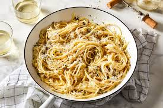

This is a recipe for your typical garlic pasta. Simple to do and tasty to eat! Below are the ingredients needed for this recipe and their measurements
Below are the steps, be sure to follow along carefully and also to read the recipe fully once before actually starting